Lars Christensen, Allerød Gymnasium. Fra hæftet »Regnbuen og eksperimenter«
Formålet med denne øvelse er at bestemme vinklen fra regnbuens centrum - regnbuen er en del af en cirkel - til selve regnbuen.
Det skal være solskin. En stativstang eller lignende på ca. 1,5 m stikkes lodret ned i jorden. Stangen danner nu en skygge. En sten anbringes på enden af skyggen. En elev kikker nu med:
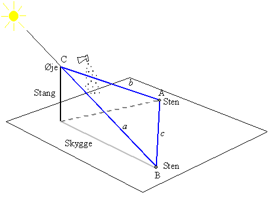
Der, hvor hun ser en bid af regnbuen, placeres en sten på jorden. Prøv også at finde andre bidder af regnbuen for at gøre dig klart, hvor regnbuen ses i forhold til en linie gennem stangens øverste ende og stenen for enden af skyggen. Regnbuen ses bedst på en mørk baggrund.
Med et målebånd bestemmes afstanden, a, fra stangens øverste ende til stenen på skyggens endepunkt, afstanden, b, fra stangens øverste ende til stenen hvor regnbuebidden sås og afstanden, c, mellem de to sten. De tre sider a, b og c danner en trekant ABC. Vi er interesseret i vinkel C, og denne vinkel kan findes ved hjælp af cosinusrelationen:
c2 = a2 + b2 - 2abcos(C)
Når I nu alligevel er i gang, så prøv også at finde ud af, hvordan lyset fra regnbuen er polariseret ved hjælp af et polarisationsfilter eller et par polaroidsolbriller.
Et skema til observationerne kunne fx. være:
|
a = |
b = |
c = |
Vinkel C = |
|
Polarisation |
|||
Formålet med denne øvelse er at eftervise brydningsloven og bestemme brydningsforholdet for vand.
Du skal bruge en plexiglasbeholder af form som en halv cylinder, noget vand, nogle nåle, en flamingoplade og et stykke polærpapir. Der fyldes lidt vand i plexiglasbeholderen, og denne anbringes på et stykke polærpapir, der igen er lagt på en flamingoplade.
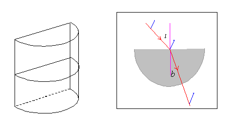
Der sættes nu en nål »midt på« plexiglasbeholderens plane side. En anden nål anbringes et passende stykke ude på den plane sides »midtnormal« (indfaldsvinklen i = 0°). Nu kikkes ind mod plexiglasbeholderens krumme side, og en nål anbringes således, at alle tre nåle ses på linie. Brydningsvinklen noteres. Den anden nål flyttes, så indfaldsvinklen bliver 10°, og den tredje nål anbringes som før således, at alle tre nåle ses på linie. Således fortsættes med indfaldsvinkler på 20°, 30°, 40°, 50° og 60°. Endvidere beregnes sinus til indfaldsvinklerne og brydningsvinklerne. Et skema kunne se ud som vist nedenfor.
|
Indfaldsvinkel i |
0° |
10° |
20° |
30° |
40° |
50° |
60° |
|
Brydningsvinkel b |
|
|
|
|
|
|
|
|
sin(i) |
|
|
|
|
|
|
|
|
sin(b) |
|
|
|
|
|
|
|
Der tegnes nu en graf med sin(b) ud ad x-aksen og sin(i) opad y-aksen. Grafens form kommenteres. Hvordan kan brydningsforholdet bestemmes? Bestem brydningsforholdet og sammenlign med tabelværdi.
Når man taler om, at brydningsforholdet for vand er 1,33, så er det kun den halve sandhed. Det viser sig nemlig, at lys brydes lidt forskelligt afhængigt af bølgelængden. Det vil sige, at vands brydningsforhold ændres en lille smule, når bølgelængden ændres. Dette fænomen kaldes dispersion, og det undersøges bedst med et prisme.
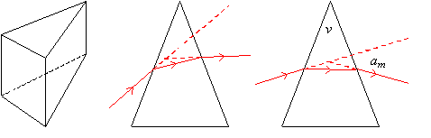
Et prisme er en høj »trekant« af et gennemsigtigt materiale. Sendes lys med en bestemt bølgelængde ind i et prisme, kan det se ud som vist ovenfor. I situationen til højre er strålegangen symmetrisk, og det viser sig, at lysstrålen afbøjes mindst. Man siger, at prismet er i hovedstillingen, og når dette er tilfældet, kan brydningsforholdet n kan bestemmes ved hjælp af følgende formel:
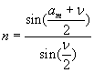
Her er v den brydende vinkel og am er afbøjningsvinklen, se ovenstående figur.
- og videre med eksperimentet:
Vi sender hvidt lys gennem en smal spalte, og ved hjælp af en linse kan vi danne et skarpt billede af spalten på en lang skærm et par meter væk. Skærmen skal stå vinkelret på lysstrålen. Man kan fx holde et spejl op ad skærmen. Når den reflekterede lysstråle går lige tilbage til spalten, står skærmen rigtigt. Der sættes et mærke på skærmen, hvor spalten bliver afbildet.
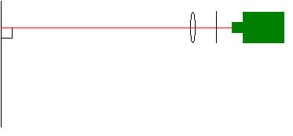
På et niveaubord tapes et stykke papir. Oven på papiret anbringes et hult glasprisme med vand i. Det hele placeres, så lysstrålen brydes i prismet, og der dannes et spektrum i alle »regnbuens« farver på skærmen. Ved at dreje prismet kan man finde hovedstillingen, idet spektret da er nærmest det sted på skærmen, hvor billedet af spalten blev dannet. Her er afbøjningen jo mindst. Vi har nu en situation som vist nedenfor. På papiret tegnes langs prismets sider, og man markerer, hvor lysstrålen går ind og ud af prismet. Også retningerne af den ind- og udgående lysstråle indtegnes. Endelig markeres på skærmen, hvor spektrets grænser er.
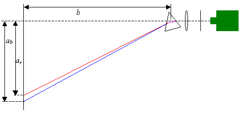
Nu skal afbøjningsvinklen for det yderste violette lys og for det yderste røde lys bestemmes. Dette gøres ved at bestemme de tre afstande: av (v for violet) ar (r for rød) og b, se ovenstående figur. Nu kan afbøjningsvinklen am for det violette og røde lys bestemmes. Når endvidere v kendes, kan brydningsforholdet n for det violette og det røde lys bestemmes. Man kan da formode, at brydningsforholdet for de »synlige« bølgelængder vil ligge mellem de fundne værdier. Tallene indføres i et skema, der fx kunne se således ud:
|
Farve |
Violet |
Rød |
|
a / cm |
|
|
|
b / cm |
|
|
|
am / ° |
|
|
|
v / ° |
|
|
|
n |
|
|
Man kan lave bølger på en lang snor eller fjeder. Man holder med hånden i den ene ende, og den anden ende af fjederen er fastgjort til et fast punkt. Frembringes bølgerne ved at bevæge hånden op og ned, kan bølgerne beskrives ved, at de svinger i en lodret plan. Bevæges hånden til højre og venstre, svinger bølgerne i en vandret plan. Man kan også få bølgerne til at svinge i en skrå plan. Snorbølger er transversale bølger, da udsvingene er vinkelret på udbredelsesretningen. Lys er også transversale bølger. Fra almindelige lyskilder kan en lysstråle beskrives som bølger, der svinger i alle mulige planer, som kan lægges på den linie, der udgør lysstrålen. Lyset er upolariseret.
Til at undersøge polarisation kan man benytte et polarisationsfilter, der kun tillader lys, der svinger i en bestemt plan, at komme igennem. Man kan også benytte polaroidsolbriller. De tillader lys, der svinger i en lodret plan at komme igennem.
Tag et polarisationsfilter og se på en lampe igennem det. Drej filtret rundt om en akse vinkelret på filtret. Beskriv hvad I ser. Man siger, at lyset er upolariseret.
Tag nu to polarisationsfiltre og læg dem ovenpå hinanden. Drej de to filtre i forhold til hinanden, mens I ser på en lampe igennem de to filtre. Beskriv og forklar, hvad I ser.
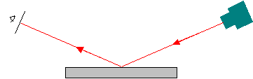
Send lys fra en spot skråt ned på en glasplade, der ligger på et bord. Se på det reflekterede lys gennem et polarisationsfilter, som I drejer. Beskriv hvad I ser. Man siger, at det reflekterede lys er polariseret. På hvilken led svinger lyset? Ved en bestemt indfaldsvinkel er det reflekterede lys helt polariseret. Denne vinkel kaldes Brewstervinklen. Den afhænger af brydningsforholdet for det reflekterende materiale. Prøv også at undersøge det reflekterede lys fra en vandoverflade. Kan man sige noget om polarisationsretningen for det lys, der brydes ned i vandet?
Hvad er egentlig fidusen ved polaroidsolbriller?
Hvis I i stedet ville »reflektere« tændstikker ved at kaste dem skråt ned mod en bordplade, hvordan skulle de så kastes? Hvad har det mon med refleksion af lys at gøre? Det forklarer selvfølgelig ikke polarisationsfænomenet, men det kan måske hjælpe én til en huskeregel.
Måske kan ovenstående på et senere tidspunkt hjælpe jer til at forstå, hvorfor lyset fra regnbuen er polariseret, og hvordan det er polariseret. I øvrigt er lyset fra den blå himmel polariseret, se selv efter.
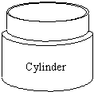
Den cylinderformede beholder med lidt let »snavset« vand i placeres midt i kassen. Der blæses lidt røg ned i kassen og glas- eller plasticpladen lægges over. Endelig sendes laserlys ind gennem »vinduet«. Nu skulle man kunne se strålegangen af lysstrålen.
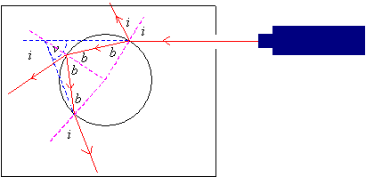
Lad lysstrålen ramme forskellige steder på cylinderen og bemærk, hvordan lysstrålerne skifter retning. Med lidt held kan man se lysstråler, der kommer ud af cylinderen både efter en og to refleksioner på indersiden af cylinderen.
Læg en overheadtransparent med cylinderen indtegnet oven på det hele og tegn strålerne ind, se ovenstående figur. Benyt en vinkelmåler til at bestemme vinklerne, der er benævnt i, og kontrollér, at de er lige store. Det samme gøres for de vinkler, der er benævnt b. Bestem gennemsnittet af vinklerne i og b, og benyt disse vinkler til at bestemme brydningsforholdet for vand.
Mål også afbøjningsvinklen v og se, om det stemmer med en teoretisk overvejelse. Den relative »impactparameter« kan selvfølgelig bestemmes med en lineal, men det vil give større nøjagtighed at bestemme den som sin(i)
Et skema kunne fx. se ud som vist nedenfor, hvor ig og bg er gennemsnit af indfaldsvinkler og brydningsvinkler:
|
i = |
i = |
i = |
i = |
ig= |
|
|
|
b = |
b = |
b = |
b = |
bg = |
|
|
|
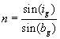 |
Tabelværdi for n |
|
||||
|
Afbøjningsvinkel v |
Teoretisk værdi for v |
|||||
Der benyttes en opstilling som vist nedenfor, hvor hvidt lys, der består af lys med alle mulige bølgelængder i et interval, sendes mod en vanddråbe. Øvelsen går så ud på at se, hvad der kommer ud af dråben.
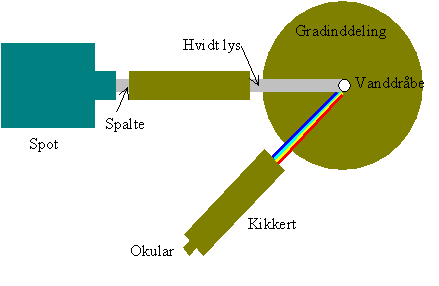
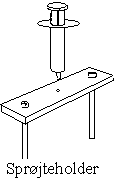
Kikkerten drejes derpå gennem forskellige vinkler, og man vil da se to »regnbuer« og områder uden for disse, der er lyse eller mørke. Der skal noteres 4 vinkler, nemlig ved hvilke vinkler de to »regnbuer« starter og slutter. Man skal også notere den farve, »regnbuerne« starter og slutter med. Endelig noteres, om områderne udenfor »regnbuerne« er lyse eller mørke.
Når nu ovenstående er udført, drejes kikkerten hen på »regnbuen« med de mindste vinkler, »primærregnbuen«, og okularet fjernes. Se da ind i kikkerten og find ud af, om det farvede lys kommer fra venstre eller højre side af vanddråben. Det samme gøres for den anden »regnbue«, »sekundærregnbuen«.
Hold endelig et polarisationsfilter mellem dråbe og kikkert. Hvordan skal det drejes, så der kommer mest muligt lys?
Et skema kunne se ud, som vist nedenfor.
| Regnbue |
Primær |
Sekundær |
|||||
| Farve | |||||||
| Vinkel | |||||||
| Højre/venstre | |||||||
| Polarisation | |||||||
Formålet med denne øvelse er at se, hvad der sker med en masse lysstråler, når disse sendes ind i en vanddråbe. I hvilke retninger kommer de ud?
Når en lysstråle rammer et grænselag mellem to gennemsigtige stoffer, vil en del af lysstrålen brydes, og en del vil reflekteres. Lad os tænke på den situation, hvor en lysstråle rammer en kugleformet vanddråbe. Der kan fx ske det, der er vist nedenfor.
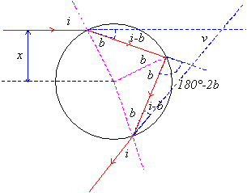
Vi tænker os, at dråben har en radius på 1mm, og at den rammer i afstanden x fra centrum, se figur. Med figurens betegnelser ses, at strålen drejes vinklen i - b til højre ved den første brydning. Ved spejlingen drejes den 180° - 2b til højre. Når lysstrålen endelig bryder ud, drejes den igen i - b til højre. Alt i alt er den drejet
2(i - b) + 180° - 2b = 2i - 4b + 180° = 180° - (4b - 2i)
til højre. Vi ser, at lysstrålen mangler vinklen 4b - 2i i at være drejet helt i modsat retning af den oprindelige. Denne vinkel kaldes v (se figur):
v = 4b - 2i
På figuren ser vi, at
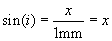
i = sin-1(x)
Af brydningsloven har vi
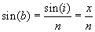
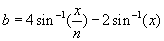
Altså: Hvis en lysstråle sendes ind i en regndråbe i afstanden x - egentlig bør vi sige den relative afstand x - så kommer den ud i en retning v, der er givet ved ovenstående udtryk. Sender vi 100 lysstråler med x jævnt fordelt fra 0 til 0,99, så kan vi få en computer til at beregne de tilhørende vinkler v. Vi kan da se, om der er en retning v, hvor der kommer særligt mange lysstråler ud. Vil vi fx se i hvilken retning, der kommer særligt meget rødt lys ud med bølgelængden 760 nm, så lader vi computeren udregne de 100 vinkler v med et brydningsforhold n = 1,3290, som er vands brydningsforhold for lys med bølgelængden 760 nm. Samme undersøgelse kan man foretage for violet lys med bølgelængden 380 nm. Man skal da vælge n = 1,3452.
De to bølgelængder vi har nævnt, angiver grænserne for synligt lys. Man kan forestille sig, at lys med en bølgelængde i det synlige område, vil være særligt kraftigt ved en vinkel mellem de to vinkler, der er bestemt på den ovenfor beskrevne måde.
Ovenstående overvejelser gælder for det lys, der kommer fra den kraftigste af de regnbuer man ser. Denne regnbue kaldes primærregnbuen.
Uden om primærregnbuen ses en større, bredere og svagere regnbue, sekundærregnbuen. Lyset fra denne regnbue har taget en lidt mere indviklet tur gennem regndråberne, se figuren nedenfor.
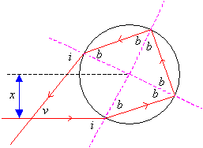
Vi ser som før, at hver gang lysstrålen brydes, drejes den vinklen i - b, og hver gang den reflekteres, drejes den vinklen 180° - 2b. I alt drejes den vinklen:
2(i - b) + 2(180° - 2b) = 180° + 180° + 2i - 6b
Vi ser altså, at lysstrålen drejes vinklen 180° + 2i - 6b mere end i modsat retning af, hvor den kom fra. Denne vinkel kalder vi v, altså
v = 180° + 2i - 6b
Vinklerne i og b er givet ved samme udtryk som før, og vi får
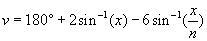
Igen kunne vi sende 100 lysstråler med en bestemt bølgelængde ind mod en regndråbe med x-værdier jævnt fordelt fra 0 til 0,99, og så se, om der skulle være en vinkel v, omkring hvilken, der kom særligt mange lysstråler ud af dråben. Dette kunne vi gøre for det yderste røde og violette lys. Alle andre bølgelængder i det synlige område vil da være særligt kraftige for vinkler mellem de to vinkler.
Der er flere måder at bruge computeren til at undersøge ovenstående. Fx kunne man bruge regneark - måske som beskrevet i det følgende.
Lav et skema med 5 søjler. I den første søjle skal der stå 100 x-værdier jævnt fordelt fra 0 til 0,99. I de to næste skal der stå de tilsvarende vinkler v for n lig 1,3290 og 1,3452 når lyset reflekteres én gang inde i regndråben, og i de to sidste vinklerne v når lyset reflekteres to gange for de to n-værdier. Starten af regnearket, det bliver jo et stort skema, kunne se ud som vist nedenfor.
|
x |
vpr/° |
vpv/° |
vsr/° |
vsv/° |
|
0,00 |
0,0 |
0,0 |
180,0 |
180,0 |
|
0,01 |
0,6 |
0,6 |
178,6 |
178,6 |
|
0,02 |
1,2 |
1,1 |
177,1 |
177,2 |
Her står p og s for primær og sekundær, og r og v for rød og violet.
I Excel skriver man =A2+0,01 i celle A3 og så »fylde nedad« til og med celle A101. I celle B2 ville man skrive:
=(4*arcsin(A2/1,3290)-2*arcsin(A2))*180/pi()
som angiver vinklen v ved én refleksion i dråben for brydningsforholdet 1,3290. Det er for det yderste synlige røde lys. På lignende måde er celle C2 udfyldt, blot er brydningsforholdet 1,3452. Det er for det yderste synlige violette lys. For celle D2 og E2 er anvendt formelen for v, når der sker to reflektioner inde i dråben. De sidste 4 søjler er naturligvis også »fyldt nedad«.
Når skemaet er lavet, printes det ud, og bagefter laves fire grafer i samme koordinatsystem, med x ud ad 1.-aksen og de fire vinkler op ad 2.-aksen.
I skemaet finder man nu vinkler, omkring hvilke der kommer særligt mange lysstråler ud af dråben, dette gøres for det røde og violette lys, både hvor der sker én og to reflektioner inde i regndråben. Hvordan mon disse vinkler kan findes ved hjælp af graferne? Indfør disse vinkler i et passende skema. Du har måske allerede lavet et eksperiment, der viser om ovenstående skrivebordsarbejde har hold i virkeligheden?
Nu gør én regndråbe jo ingen regnbuer. Hvad har ovenstående med regnbuerne at gøre, og kan de fundne vinkler sige noget om regnbuernes »størrelse«?